Rear Window Lift With Window, CV
Rear Window Lift With Window, CV
To remove
1. Open the window approx. 6 cm.
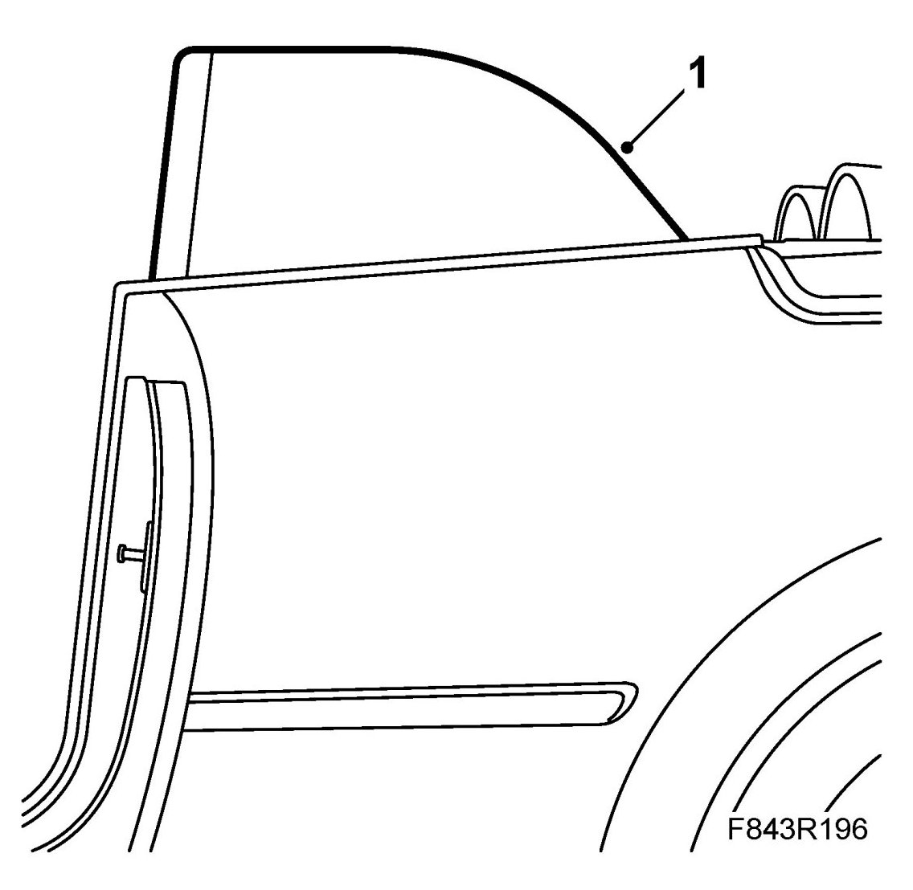
2. Remove Backrest, rear seat, CV, Seat cushion, rear seat, CV and Rear side trim, CV.
3. Remove the outer weatherstrip.
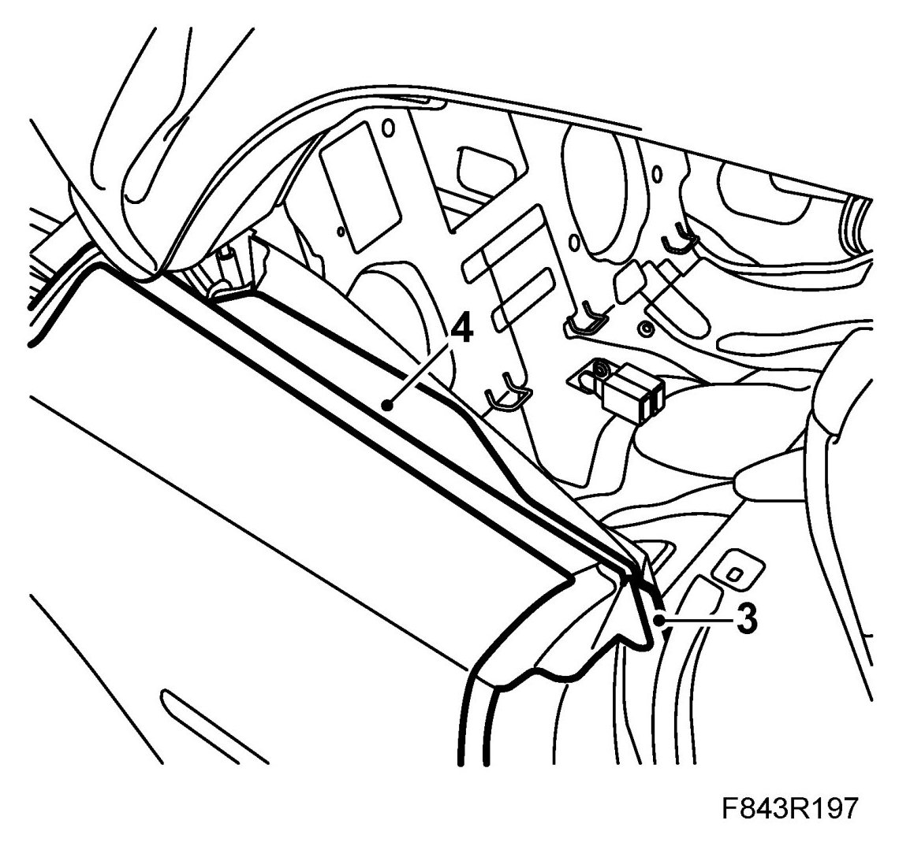
4. Remove the insulation.
5. Remove the upper window lift screws.
6. Fold down the moisture barrier.
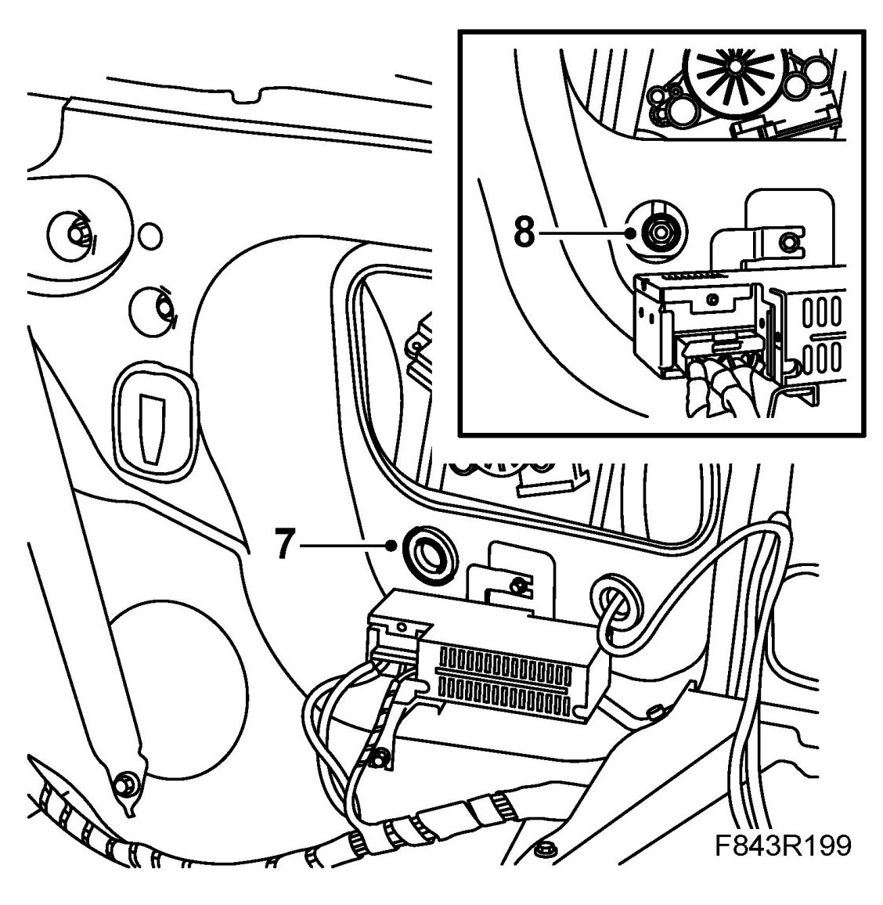
7. Remove the rubber grommet.
8. Remove the lower window lift nuts.
9. Unplug the connector.
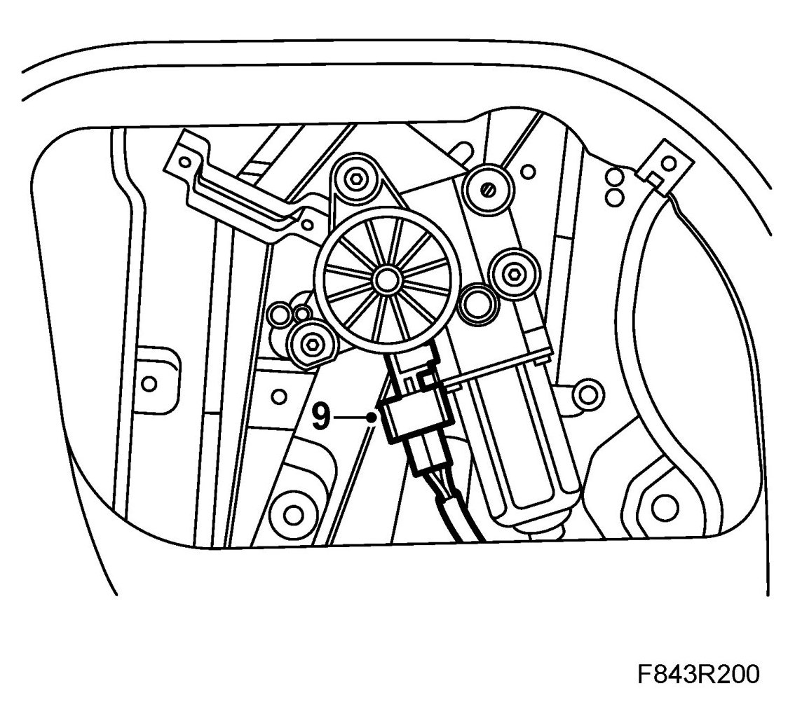
10. Lift up the window lift with side window.
11. Remove the window nuts from the inside.
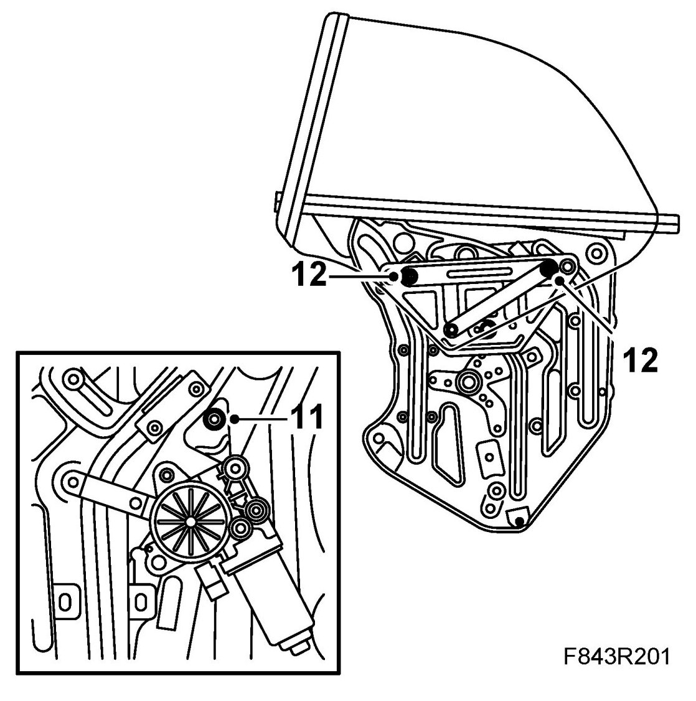
12. Remove the window screws.
13. Lift away the side window.
To fit
1. Position the window against the window lift.
2. Fit the window screws.
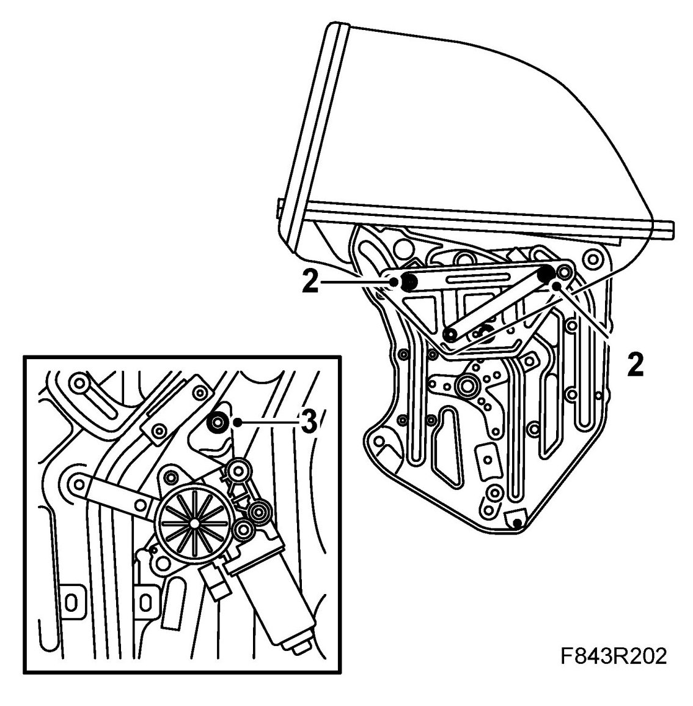
3. Fit the window nuts on the inside.
4. Fit the window lift with side window. Ensure that the nut with the fixed washer is on the outside.
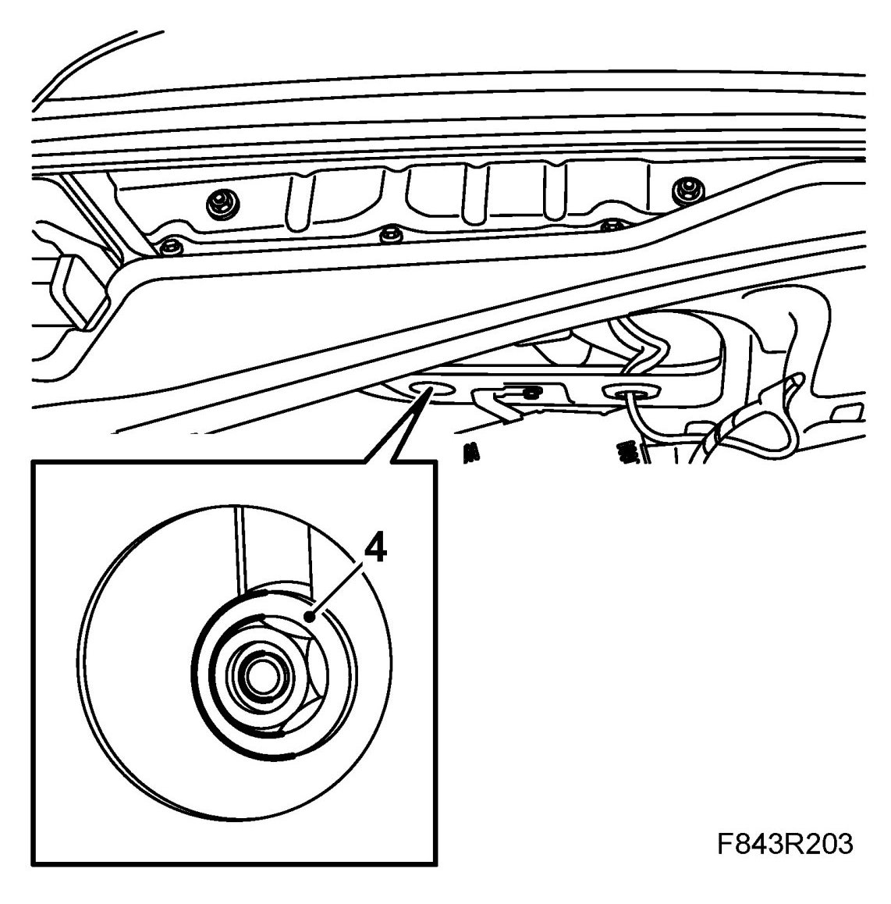
5. Plug in the connector.
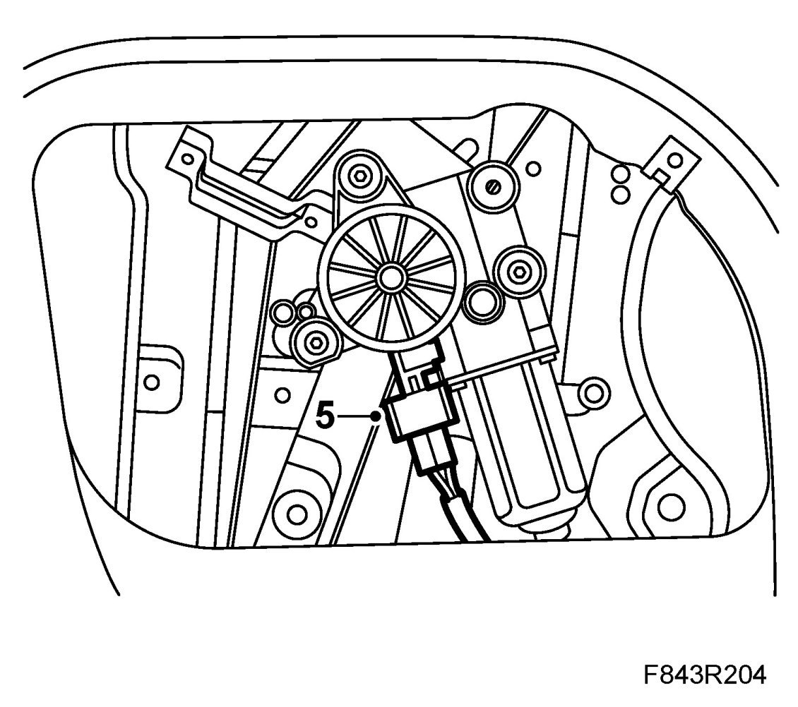
6. Fit the lower window lift nuts.
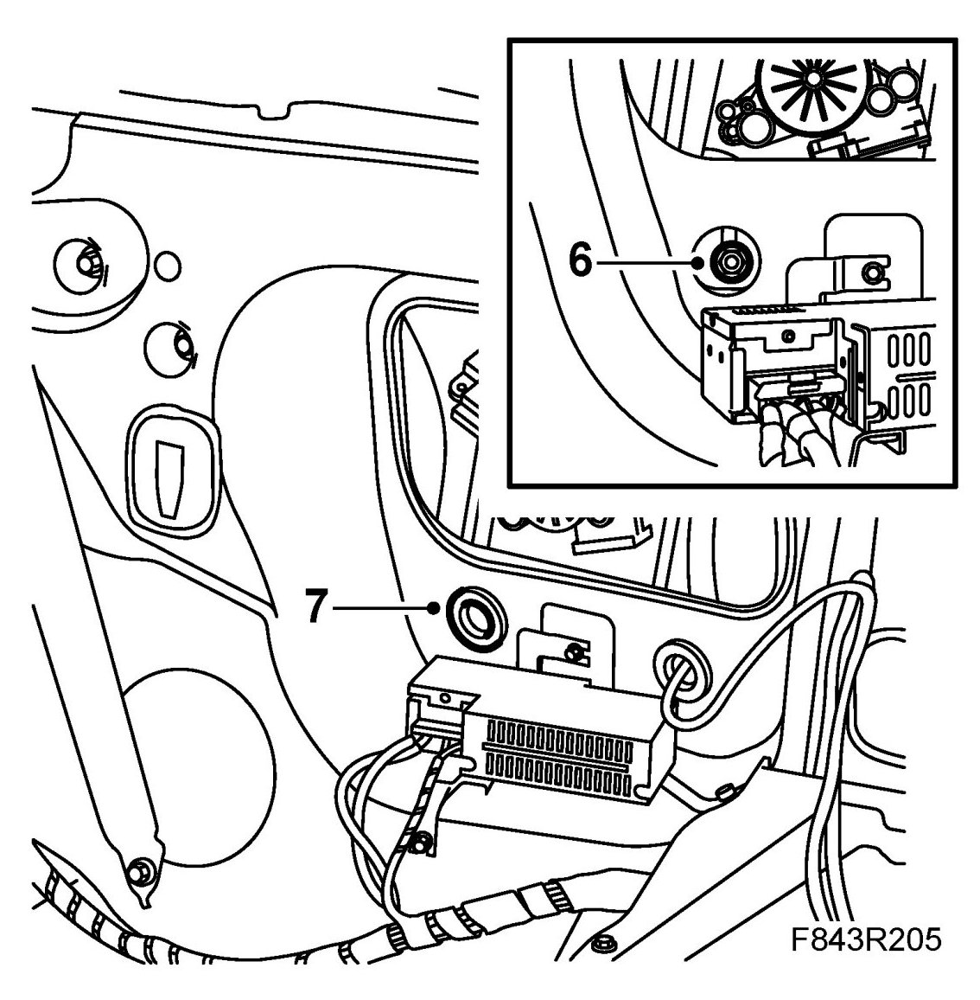
7. Refit the rubber grommet.
8. Fold back the moisture barrier.
9. Fit the upper window lift screws.
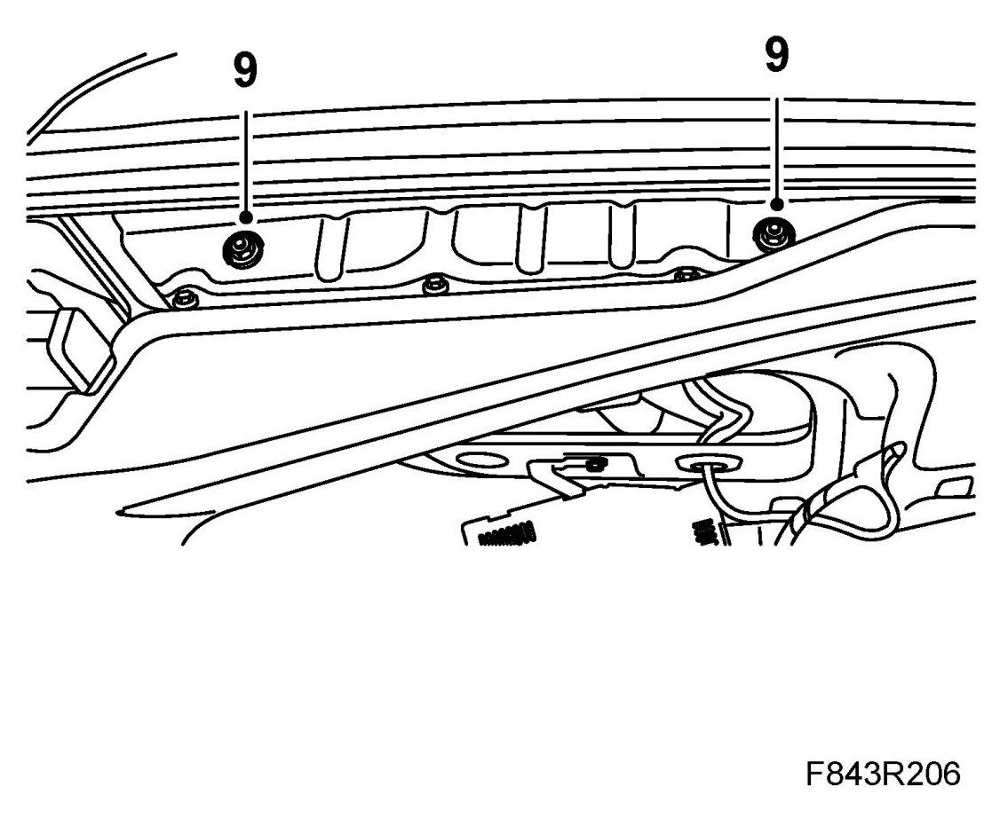
10. Fit the insulation.
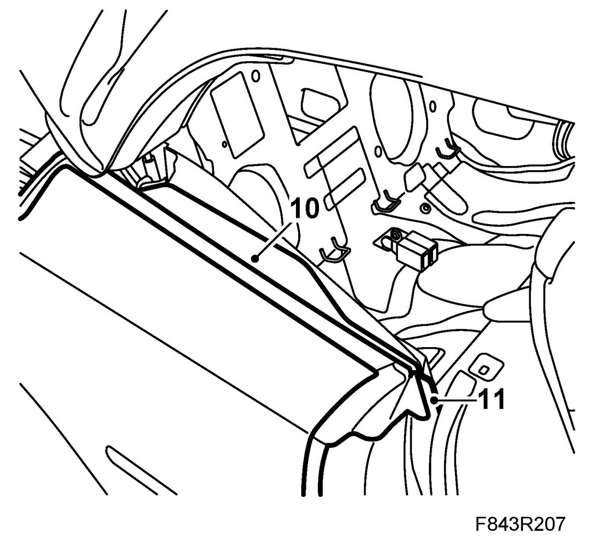
11. Fit the outer weatherstrip.
12. Plug in the upholstery connector. Test the fit and operation of the window. If necessary adjust the window, see Adjustment of the door mirror base seal and windows, CV.
13. Fit Rear side trim, backrest and seat cushion.
14. Cars with pinch protection: Calibration of pinch protection.